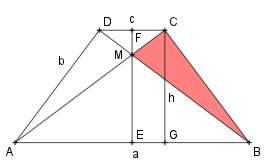

Aufgabe 118 Wie groß ist die farbige Fläche A des gleichschenkligen Trapezes, wenn AB = 200 mm, AD = 120 mm und CD = 56 mm?  Satz von Pythagoras im Dreieck GBC: BC² = h² + BG² BG = AB/2 - DC/2 = 100 mm - 28 mm = 72 mm 120² = h² + 72² |-72² h² = 9 216 mm² |√ h = 96 mm Strahlensatz: FC MF ---- = ---- AE ME 28 MF ----- = ---- 100 ME Über Kreuz multipliziert: 28 * ME = 100 * MF |:100 MF = 0,28 * ME (1) ME + MF = h |-ME MF = 96 - ME (2) (2) eingesetzt in (1) 96 - ME = 0,28 * ME |+ME 1,28 * ME = 96 |:1,28 ME = 75 mm MF = 21 mm A = ATrapez/2 - AEBM - AMCF 200 + 56 ATrapez/ = ---------- * 96 mm² = 12 288 mm 2 ATrapez/2 = 12 288 mm²/2 = 6 144 mm² 100 * 75 AEBM = ---------- mm² = 3 750 mm² 2 28 * 21 AMCF = --------- mm² = 294 mm² 2 A = 6 144 mm² - 3 750 mm² - 294 mm² = 2 100 mm²